Lab 2: Multiplexed Seven Segment Display
Introduction
The goal of this lab is to implement a time-multiplexer to drive two seven segment displays with a single set of FPGA I/O pins, using a transistor circuit to drive large currents from our FPGA to our dual seven-segment display, to output the hexadecimal numbers of two dip switches. There will also be five LEDs on the breadboard, which will display the sum of the two input values.
FPGA Design
Objective
The objective of this lab is to use System Verilog to code a time-multiplexer to run both halves of my dual seven-segment display by switching between turning on the common anode of each display so that the naked eye cannot see the flickering of the two displays. To be able to supply the large current needed by the display, 2N3906 PNP transistors will be used. We will also use an adder to sum the two hexadecimal inputs from our dip switches and display that on five LEDs.
Design
Block Diagram
My approach to this lab consists on five different modules. It was designed to have many modules to make testing the functionality of each function of this lab easily. An overarching top level module called lab2_cw, which will be programmed to the board, and four submodules adder, sevenSegmentDisplay, timeMultiplexer, and sevenSegMux. The adder submodule will give the 5 bit sum of two four bit inputs, so that we can show the sum of our two inputs on five LEDS. The sevenSegmentDisplay submodule is the same one that was used in Lab 1, which will control the outputs on the 7-segment display, displaying the hexadecimal value provided by the dip switches, s1[3:0] and s2[3:0]. The timeMultiplexer submodule is responsible for controlling which common anode gets turned on in the dual 7-segment display. It was designed to switch at 500 Hz, which should be high enough to not be noticeable to the human eye. It will also output a signal to guide which input should be used by the sevenSegmentDisplay module, which is controlled by sevenSegMux. The sevenSegMux module is a mux that controls which four bit input will be fed into sevenSegmentDisplay based on the enable, signal, which is given by timeMultiplexer. The top level lab2_cw calls upon all these submodules as well as the HSOSC submodule, which takes advantage of the onboard 48 MHz clock on the FPGA. Below is the block diagram I used to create this project:
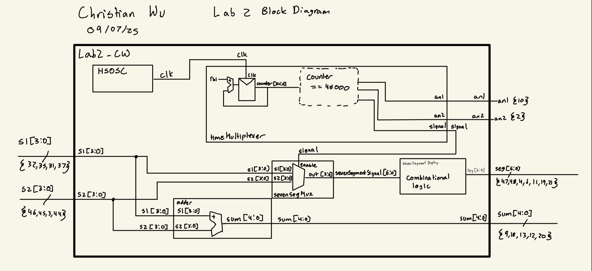
Adder Design
The adder submodule was a very simple design. It simply consisted of combinational logic that produced a 5 bit output, sum, from two four bit inputs, a and b.
Below is the code block that was used for this submodule:
// Christian Wu
// chrwu@g.hmc.edu
// 09/08/25
// This module is a 4-bit adder that takes in two 4-bit inputs a and b, and outputs a 5-bit sum.
module adder (
input logic [3:0] a, b,
output logic [4:0] sum);
always_comb begin
sum = a + b;
end
endmoduleSeven Segment Display Design
This submodule is coopied from Lab 1 and uses the exact same code. Designing the sevenSegmentDisplay submodule was fairly simple. It involved using a case statement to write out the outputs, seg[6:0] of the 7-segment display for all 16 possible inputs of s[3:0]. While writing the code, it is worth noting that turning on each segment of the 7-segment display was with a 0 output as the cathode is connected to each output pin.
Below is a labeled image of each segment of the 7-segment display and the code for this submodule, where s[0] is segment A and s[6] is segment G of the 7-segment display:

// sevenSegmentDisplay.sv
// Christian Wu
// chrwu@g.hmc.edu
// 09/06/25
// This module takes in a 4-bit input 's', using the dip switches on the motherboard,
// and controls the seven-segment display output seg[6:0].
module lab1_sevenSegmentDisplay (
input logic [3:0] s,
output logic [6:0] seg);
// 7-Segment Display Logic
always_comb begin
case (s)
4'h0: seg = 7'b1000000; // 0
4'h1: seg = 7'b1111001; // 1
4'h2: seg = 7'b0100100; // 2
4'h3: seg = 7'b0110000; // 3
4'h4: seg = 7'b0011001; // 4
4'h5: seg = 7'b0010010; // 5
4'h6: seg = 7'b0000010; // 6
4'h7: seg = 7'b1111000; // 7
4'h8: seg = 7'b0000000; // 8
4'h9: seg = 7'b0010000; // 9
4'hA: seg = 7'b0001000; // A
4'hB: seg = 7'b0000011; // b
4'hC: seg = 7'b1000110; // C
4'hD: seg = 7'b0100001; // d
4'hE: seg = 7'b0000110; // E
4'hF: seg = 7'b0001110; // F
default: seg = 7'b1111111; // Off
endcase
end
endmoduleTime Multiplexer Design
The main purpose of the timeMultiplexer submodule is to switch between each common anode on our dual 7-segment display, so that we only need one sevenSegmentDisplay submodule to control both digits. Thus, we are turning on one side of the dual 7-segment display on at a time, but if we do it fast enough, the human eye cannot notice each digit turning on and off. To switch between the two common anodes fast enough, I chose to switch between each display at 500 Hz. This is done by using the FPGA’s onboard 48 MHz clock, and using a counter. 500 Hz is equivalent to 0.002 seconds per cycle, and assuming a 50% duty cycle, we must switch from one common anode to the other every 0.001 seconds. For a 48 MHz clock, this would equate to 48000 ticks. Thus, we can use a counter to turn each side of the dual 7-segment display on or off, every 48000 ticks. At the same time, we can also output, signal, to tell the sevenSegMux submodule, which input to display on the corresponding side of the dual 7-segment display
Below is the code for the timeMultiplexer submodule:
// timeMultiplexer.sv
// Christian Wu
// chrwu@g.hmc.edu
// 09/06/25
// This module takes in two four bit inputs, s1 and s2, and switches between them to drive a dual seven
// segment display, to utilize only one sevenSegmentDisplay module. The switching is done at a rate fast enough
// such that the human eye cannot detect the switching, and it appears that both displays are on at the same time.
module timeMultiplexer (
input clk,
output logic an1, an2,
output logic signal);
logic [24:0] counter = 0;
always_ff @(posedge clk) begin
counter <= counter + 1;
if (counter == 48000) begin
counter <= 0;
signal <= ~signal;
if (~signal) begin
an1 <= 1; // turn off an1
an2 <= 0; // turn on an2
end else begin
an1 <= 0; // turn on an1
an2 <= 1; // turn off an2
end
end
end
endmoduleSeven Segment Mux Design
The design for the sevenSegMux submodule is quite simple. This submodule depicts a simple mux with an enable on it. This submodule is used to output the correct 4 bit input into the sevenSegmentDisplay submodule. When the enable is on, we set the ouput to be s2, and when it is off, we set the output to be s1.
Below is the code for the sevenSegMux submodule:
// Christian Wu
// chrwu@g.hmc.edu
// 09/08/25
// This module takes in two 4-bit inputs, s1 and s2, and an enable, and outputs one
// of the inputs to a 4-bit output based on the enable signal for the seven-segment display
module sevenSegMux (
input logic [3:0] s1, s2,
input logic enable,
output logic [3:0] out);
always_comb begin
if (enable) begin
out = s2;
end else begin
out = s1;
end
end
endmoduleTop Level Module
Given that this lab project was split into one top level module and four submodules, the top level module is quite simple. It is a module that calls upon the four submodules, adder, sevenSegmentDisplay, timeMultiplexer, and sevenSegMux. It also calls upon the HSOSC module to take advantage of the onboard 48 MHz clock on the FPGA. This top level module, lab2_cw, will then be programmed onto the FPGA.
Below is the code for the top level module, lab2_cw:
// lab2_cw.sv
// Christian Wu
// chrwu@g.hmc.edu
// 09/06/25
// This module is the top level module for lab 2. It instantiates the timeMultiplexer module to drive the
// seven-segment display, and connects the dip switches to the inputs of the timeMultiplexer module. It also displays
// the sum of the two 4-bit inputs on five LEDs.
module lab2_cw (
input logic [3:0] s1, s2, // dip switches
output logic [6:0] seg, // seven-segment display
output logic an1, an2, // anodes for the two displays
output logic [4:0] sum); // 5 LEDs to display sum
logic [3:0] sevenSegmentSignal;
logic signal; // select signal to choose between s1 and s2
logic clk;
HSOSC hf_osc (.CLKHFPU(1'b1), .CLKHFEN(1'b1), .CLKHF(clk));
timeMultiplexer tm (.clk(clk), .an1(an1), .an2(an2), .signal(signal));
sevenSegMux ssm (.s1(s1[3:0]), .s2(s2[3:0]), .enable(signal), .out(sevenSegmentSignal));
sevenSegmentDisplay ssd (.s(sevenSegmentSignal), .seg(seg));
adder a (.a(s1[3:0]), .b(s2[3:0]), .sum(sum[4:0]));
endmoduleTestbench Simulation and Testing
Testbench Design and Results
To test my code and see whether it would work as expected, I created a testbench to test before moving on to using physical hardware. I created a testbench for each of my five modules, testing a different functionality of this lab with east testbench. For the adder submodule, I tested all 256 possible cases using a for loop to make sure that the output sum was correct. For the sevenSegmentDisplay submodule, I tested all 16 possible 4 bit inputs and made sure that the 7 bit output was correct. For the timeMultiplexer submodule, I tested the sequential logic that occurs in this submodule to check that the submodule switches between turning on each common anode on the dual 7-segment display, and correctly outputs the right signal for the sevenSegMux to use. For the sevenSegMux submodule, I tested that the mux would output the right 4 bit value from the two 4 bit inputs, based on whether the enable was on or off. For the top level lab2_cw module, it was used to test that the HSOSC module worked, by sampling a few different test cases and making sure that the dual 7-segment display would show both of the values by switching between outputting each one.
Each of the testbenches were done by using the stim/assert method, to ensure functionality automatically, without having to analyze the waveforms carefully to see if it worked or not.
adder_testbench results:
This testbench tested the combinational logic of the adder submodule, testing all 256 cases. Below is the code used for my testbench:
// Christian Wu
// chrwu@g.hmc.edu
// 09/08/25
// This module tests the 4-bit adder module by providing various test cases and checking the output.
`timescale 1ns/1ps
module adder_testbench();
logic [3:0] a, b;
logic [4:0] sum;
logic [4:0] expected_sum;
adder dut (.a(a), .b(b), .sum(sum));
integer i,j;
integer test_cases = 0;
initial begin
// Test all combinations of 4-bit inputs
for (i = 0; i < 16; i++) begin
for (j = 0; j < 16; j++) begin
a = i[3:0];
b = j[3:0];
#1; // wait for combinational logic to settle
test_cases++;
expected_sum = a + b;
assert (sum === expected_sum)
else $error("ASSERTION FAILED: a=%0d, b=%0d, expected sum=%0d, got sum=%0d", a, b, expected_sum, sum);
end
end
$display("All %0d test cases completed with", test_cases);
$stop;
end
endmoduleBelow are the Questa simulation results:
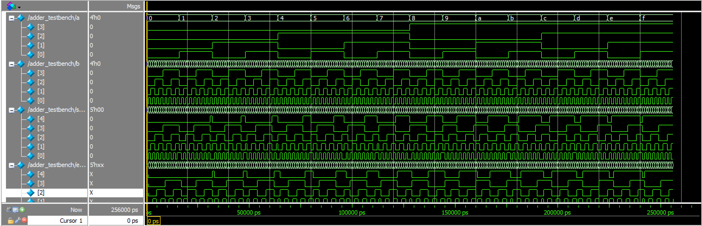
adder Waveforms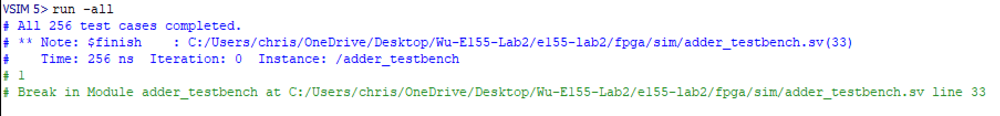
adder TranscriptsevenSegmentDisplay_testbench results:
This testbench tested the combinational logic of the sevenSegmentDisplay submodule, testing all 16 cases. Below is the code used for my testbench:
// sevenSegmentDisplay.sv
// Christian Wu
// chrwu@g.hmc.edu
// 09/06/25
// This module takes in a 4-bit input 's', using the dip switches on the motherboard,
// and controls the seven-segment display output seg[6:0]. This module is copy and pasted from lab 1
module sevenSegmentDisplay (
input logic [3:0] s,
output logic [6:0] seg);
// 7-Segment Display Logic
always_comb begin
case (s)
4'h0: seg = 7'b1000000; // 0
4'h1: seg = 7'b1111001; // 1
4'h2: seg = 7'b0100100; // 2
4'h3: seg = 7'b0110000; // 3
4'h4: seg = 7'b0011001; // 4
4'h5: seg = 7'b0010010; // 5
4'h6: seg = 7'b0000010; // 6
4'h7: seg = 7'b1111000; // 7
4'h8: seg = 7'b0000000; // 8
4'h9: seg = 7'b0010000; // 9
4'hA: seg = 7'b0001000; // A
4'hB: seg = 7'b0000011; // b
4'hC: seg = 7'b1000110; // C
4'hD: seg = 7'b0100001; // d
4'hE: seg = 7'b0000110; // E
4'hF: seg = 7'b0001110; // F
default: seg = 7'b1111111; // Off
endcase
end
endmoduleBelow are the results of the Questa simulation of this testbench:
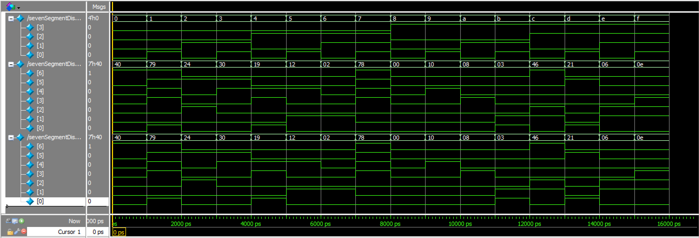
sevenSegmentDisplay Waveforms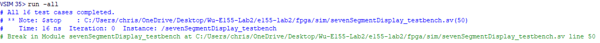
sevenSegmentDisplay TranscripttimeMultiplexer_testbench results:
This testbench tested the sequential logic of switching between turning on each common anode, and outputting the right signal for the sevenSegmentMux submodule. Below is the code for my testbench:
// Christian Wu
// chrwu@g.hmc.edu
// 09/08/25
// This module tests the timeMultiplexer module by simulating clock cycles and checking if the an1, an2, and signal outputs
// toggle correctly based on the internal counter.
// timeMultiplexer_simple_tb.sv
// Simple testbench focusing only on an1 and an2 switching behavior
`timescale 1ns / 1ps
module timeMultiplexer_testbench();
logic clk;
logic an1, an2;
logic signal;
timeMultiplexer dut (.clk(clk), .an1(an1), .an2(an2), .signal(signal));
initial begin
clk = 0;
forever #5 clk = ~clk;
end
// Test sequence
initial begin
repeat(10) begin
@(posedge signal or negedge signal);
#1;
end
$display("Test completed successfully.");
$stop;
end
// Assert statements for anode behavior
always @(*) begin
// Assert anodes are always opposite (mutually exclusive)
assert (an1 !== an2)
else $error("Anodes not mutually exclusive: an1=%b, an2=%b", an1, an2);
// Assert correct anode control based on signal
assert (signal ? (an1 == 1 && an2 == 0) : (an1 == 0 && an2 == 1))
else $error("Incorrect anode control: signal=%b, an1=%b, an2=%b", signal, an1, an2);
// Assert only one display is active at a time (one anode is 0)
assert ((an1 == 0) ^ (an2 == 0))
else $error("Neither or both displays active: an1=%b, an2=%b", an1, an2);
end
endmoduleI also used an oscilloscope to confirm that the switching between the two sides of the dual 7-segment display is at 500 Hz:
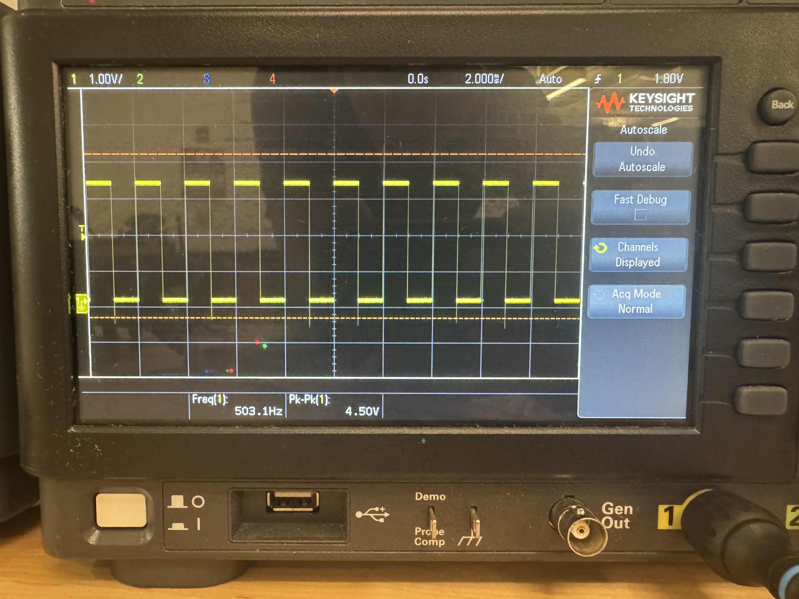
Below are the Questa simulation results:
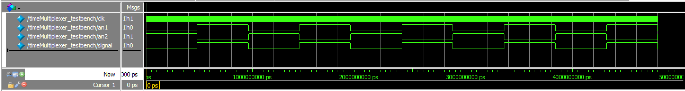
timeMultiplexer Waveforms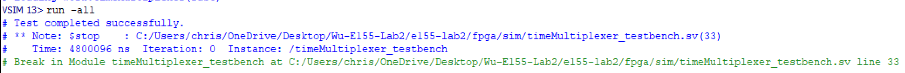
timeMultiplexer TranscriptsevenSegMux_testbench results:
This testbench tested that the mux worked as expected, testing all 512 cases. Below is the code for my testbench:
// Christian Wu
// chrwu@g.hmc.edu
// 09/08/25
// This module tests the sevenSegMux module by inputing all combinations of s1, s2, and enable signals
// and checking if the output is as expected.
`timescale 1ns/1ps
module sevenSegMux_testbench();
logic [3:0] s1, s2;
logic enable;
logic [3:0] out;
sevenSegMux dut (.s1(s1), .s2(s2), .enable(enable), .out(out));
integer i, j;
integer errors = 0;
integer test_cases = 0;
logic [3:0] expected_out;
initial begin
// Test all combinations of 4-bit inputs and enable signal
for (i = 0; i < 16; i++) begin
for (j = 0; j < 16; j++) begin
s1 = i[3:0];
s2 = j[3:0];
// Test with enable = 0
enable = 0;
#10;
test_cases++;
expected_out = s1;
assert (out === expected_out)
else $error("ASSERTION FAILED: s1=%0d, s2=%0d, enable=0, expected out=%0d, got out=%0d", s1, s2, expected_out, out);
// Test with enable = 1
enable = 1;
#10;
test_cases++;
expected_out = s2;
assert (out === expected_out)
else $error("ASSERTION FAILED: s1=%0d, s2=%0d, enable=1, expected out=%0d, got out=%0d", s1, s2, expected_out, out);
end
end
$display("All %0d test cases successfully completed.", test_cases);
$stop;
end
endmoduleBelow are the Questa simulation results:
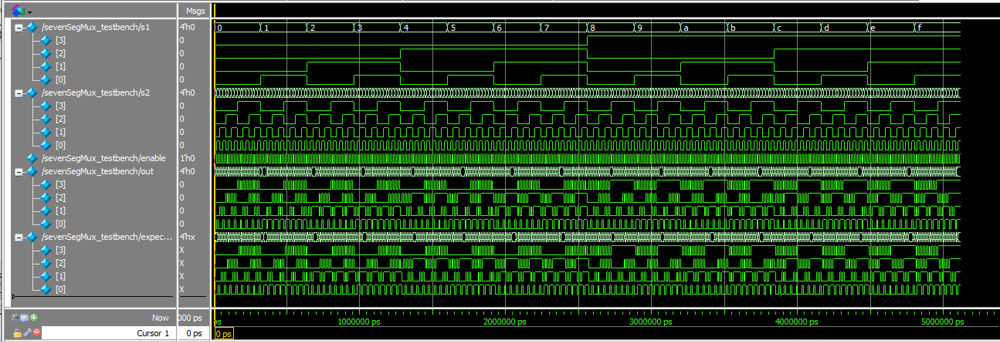
sevenSegMux Waveforms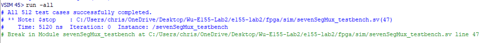
sevenSegMux Transcriptlab2_cw_testbench results:
This testbench tested the HSOSC module and the overall functionality of this lab by using a few sample test cases. Below is the code for my testbench:
// lab2_cw_testbench.sv
// Christian Wu
// chrwu@g.hmc.edu
// 09/08/25
// Simple testbench for lab2_cw module - tests each case one at a time
`timescale 1ns / 1ps
module lab2_cw_testbench;
logic [3:0] s1, s2;
logic [6:0] seg;
logic [6:0] expected_seg;
logic an1, an2;
logic [4:0] sum;
logic [4:0] expected_sum;
logic [6:0] seg_patterns [16] = {
7'b1000000, // 0
7'b1111001, // 1
7'b0100100, // 2
7'b0110000, // 3
7'b0011001, // 4
7'b0010010, // 5
7'b0000010, // 6
7'b1111000, // 7
7'b0000000, // 8
7'b0010000, // 9
7'b0001000, // A
7'b0000011, // b
7'b1000110, // C
7'b0100001, // d
7'b0000110, // E
7'b0001110 // F
};
// Instantiate the Device Under Test (DUT)
lab2_cw dut (.s1(s1), .s2(s2), .seg(seg), .an1(an1), .an2(an2), .sum(sum));
initial begin
// Test Case 1: 0 + 0 = 0
s1 = 4'h0;
s2 = 4'h0;
expected_sum = 5'd0;
#2000000; // Wait 2ms for display to switch (500Hz = 2ms period)
assert (sum === expected_sum)
else
$error("Sum wrong: %0d + %0d = %0d, expected %0d", s1, s2, sum, expected_sum);
// Wait for display 1 to be active (an1 = 0)
wait (an1 == 0); #10;
expected_seg = seg_patterns[s1];
assert (seg === expected_seg)
else
$error("Display 1 wrong pattern for s1=%h, expected=%b, got=%b", s1, seg_patterns[s1], seg);
// Wait for display 2 to be active (an2 = 0)
wait (an2 == 0); #10;
expected_seg = seg_patterns[s2];
assert (seg === expected_seg)
else
$error("Display 2 wrong pattern for s2=%h, expected=%b, got=%b", s2, seg_patterns[s2], seg);
// Test Case 2: 5 + 3 = 8
s1 = 4'h5;
s2 = 4'h3;
expected_sum = 5'd8;
#100;
assert (sum === expected_sum)
else
$error("Sum wrong: %0d + %0d = %0d, expected %0d", s1, s2, sum, expected_sum);
wait (an1 == 0); #10;
expected_seg = seg_patterns[s1];
assert (seg === expected_seg)
else
$error("Display 1 wrong pattern for s1=%h, expected=%b, got=%b", s1, seg_patterns[s1], seg);
wait (an2 == 0); #10;
expected_seg = seg_patterns[s2];
assert (seg === expected_seg)
else
$error("Display 2 wrong pattern for s2=%h, expected=%b, got=%b", s2, seg_patterns[s2], seg);
// Test Case 3: A + 7 = 17
s1 = 4'hA;
s2 = 4'h7;
expected_sum = 5'd17;
#100;
assert (sum === expected_sum)
else
$error("Sum wrong: %0d + %0d = %0d, expected %0d", s1, s2, sum, expected_sum);
wait (an1 == 0); #10;
expected_seg = seg_patterns[s1];
assert (seg === expected_seg)
else
$error("Display 1 wrong pattern for s1=%h, expected=%b, got=%b", s1, seg_patterns[s1], seg);
wait (an2 == 0); #10;
expected_seg = seg_patterns[s2];
assert (seg === expected_seg)
else
$error("Display 2 wrong pattern for s2=%h, expected=%b, got=%b", s2, seg_patterns[s2], seg);
// Test Case 4: F + F = 30 (maximum)
s1 = 4'hF;
s2 = 4'hF;
expected_sum = 5'd30;
#100;
assert (sum === expected_sum)
else
$error("Sum wrong: %0d + %0d = %0d, expected %0d", s1, s2, sum, expected_sum);
wait (an1 == 0); #10;
expected_seg = seg_patterns[s1];
assert (seg === expected_seg)
else
$error("Display 1 wrong pattern for s1=%h, expected=%b, got=%b", s1, seg_patterns[s1], seg);
wait (an2 == 0); #10;
expected_seg = seg_patterns[s2];
assert (seg === expected_seg)
else
$error("Display 2 wrong pattern for s2=%h, expected=%b, got=%b", s2, seg_patterns[s2], seg);
// Test Case 5: 8 + 8 = 16
s1 = 4'h8;
s2 = 4'h8;
expected_sum = 5'd16;
#100;
assert (sum === expected_sum)
else
$error("Sum wrong: %0d + %0d = %0d, expected %0d", s1, s2, sum, expected_sum);
wait (an1 == 0); #10;
expected_seg = seg_patterns[s1];
assert (seg === expected_seg)
else
$error("Display 1 wrong pattern for s1=%h, expected=%b, got=%b", s1, seg_patterns[s1], seg);
wait (an2 == 0); #10;
expected_seg = seg_patterns[s2];
assert (seg === expected_seg)
else
$error("Display 2 wrong pattern for s2=%h, expected=%b, got=%b", s2, seg_patterns[s2], seg);
$display("All tests successfully completed.");
$stop;
end
endmoduleBelow are my Questa simulation results:
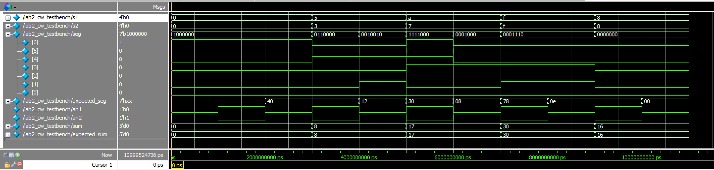
lab2_cw Waveforms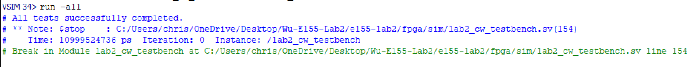
lab2_cw TranscriptThus, all testbenches and testing for this lab was successful!
Hardware
Design and Schematic
After finishing with testing, I can now build my hardware and program my FPGA. Below, is a table of all of my pin assignments, as well as my schematic:
| Name | Pin |
|---|---|
| s1[0] | 37 |
| s1[1] | 31 |
| s1[2] | 35 |
| s1[3] | 32 |
| s2[0] | 44 |
| s2[1] | 3 |
| s2[2] | 45 |
| s2[3] | 46 |
| led[0] | 20 |
| led[1] | 12 |
| led[2] | 13 |
| led[3] | 18 |
| led[4] | 9 |
| an1 | 10 |
| an2 | 2 |
| seg[0] | 21 |
| seg[1] | 19 |
| seg[2] | 11 |
| seg[3] | 6 |
| seg[4] | 4 |
| seg[5] | 48 |
| seg[6] | 47 |
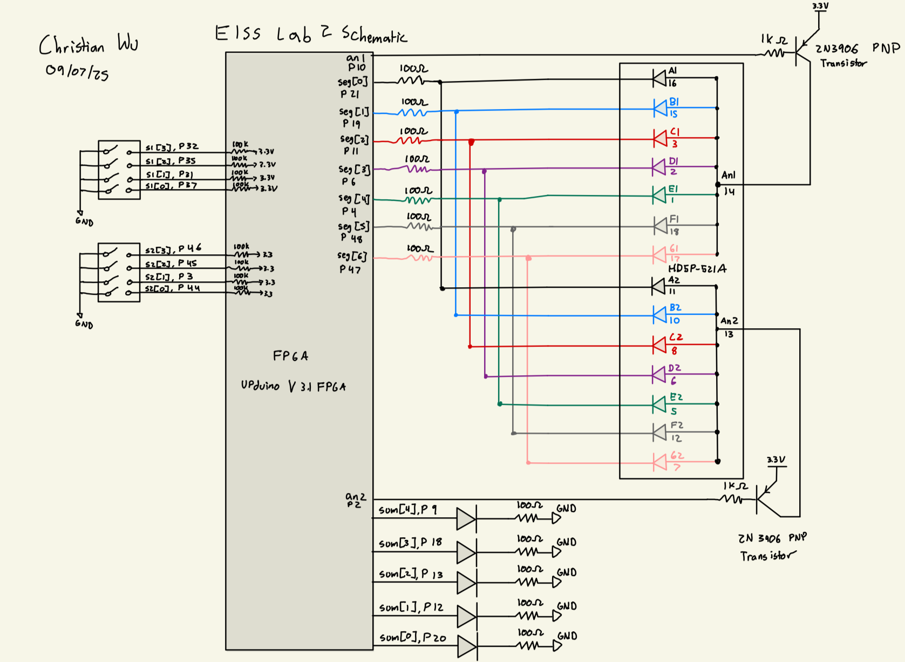
Dual 7-segment Display Resistor Values
For the 7-segment display, resistors were added at each of the seven segment pins to prevent the display from drawing too much current. After referencing the HDSP-521A Seven Segment Display Datasheet, I found that the forward voltage for the display is 2 V. Given that we are using a 3.3 V source voltage from the FPGA, the voltage across the resistor is 1.3 V. It is safe for the 7-segment display’s pins to be around 10-20 mA, so to keep it clean, I used 100 Ohm Resistors, giving a current of 13 mA.
2N3906 Transistor Base Resistor Value
We are supplying 3.3 V to our 2N3906 PNP Transistor. We know from the data sheetthat the Base Emitter Voltage is around 0.7, so we have 2.6 V that will be dropped through the resistor that connects the base to the GPIO Pin. From the iice40 Datasheet, we know from Table 4.17 that I_OL = 8 mA. Thus, we know that we want the current to be between 1 and 8 mA. I chose to use a 1 k Ohm resistor, which gives a current of 2.6 mA, giving ample wiggle room on both ends. Below is a picture that models this math:
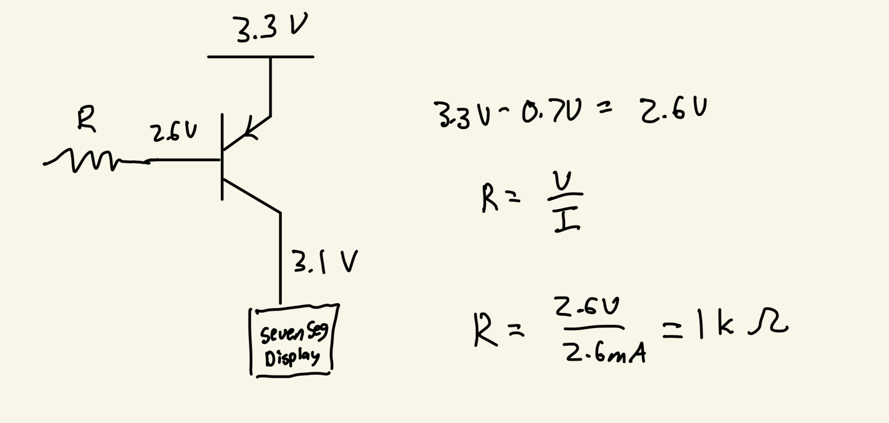
LED Resistor Values
The forward voltage of our yellow LEDs is around 2V, and we know that the current through the LEDs should be under 20 mA. Given that we are supplying 3.3 V, the remaining voltage drop across our resistor would be 1.3 V. I chose to use a 100 Ohm resistor, which gives me a current of 13 mA, keeping the LED bright, but under the 20 mA max.
Results
After finishing with the design, I was able to wire my board according to the schematic and programming my top level module, lab2_cw, onto my board. I was able to physically verify that everything worked as expected.
Below are a few pictures demonstrating this lab working successfully:


As a result, my design and project has met all the requirements for this lab.
AI Prototype
Prompt 1
To test how AI would do for this lab, I entered the following prompt to Claude AI:
Write SystemVerilog HDL to time multiplex a single seven segment decoder (that decodes from four bits to a common anode seven segment display) to decode two sets of input bits and drive two sets of seven output bits.AI Code
As a result, it returned the following code:
// Time-multiplexed seven segment decoder for two displays
// Common anode seven segment display driver
module seven_seg_decoder_mux (
input logic clk, // Clock input
input logic rst_n, // Active-low reset
input logic [3:0] digit0_in, // First 4-bit input
input logic [3:0] digit1_in, // Second 4-bit input
output logic [6:0] seg0_out, // Seven segment output for display 0 (a-g)
output logic [6:0] seg1_out, // Seven segment output for display 1 (a-g)
output logic digit0_enable, // Enable signal for display 0
output logic digit1_enable // Enable signal for display 1
);
// Internal signals
logic [3:0] mux_input; // Multiplexed input to decoder
logic [6:0] decoded_seg; // Output from seven segment decoder
logic mux_select; // Multiplexer select signal
logic [6:0] seg0_reg; // Registered output for display 0
logic [6:0] seg1_reg; // Registered output for display 1
// Clock divider for multiplexing (adjust counter width for desired refresh rate)
// With a typical 50MHz clock, this gives ~763Hz refresh per display
logic [15:0] clk_counter;
// Clock divider and multiplexer select generation
always_ff @(posedge clk or negedge rst_n) begin
if (!rst_n) begin
clk_counter <= 16'd0;
mux_select <= 1'b0;
end else begin
clk_counter <= clk_counter + 1;
// Toggle mux_select at MSB of counter
mux_select <= clk_counter[15];
end
end
// Input multiplexer
always_comb begin
case (mux_select)
1'b0: mux_input = digit0_in;
1'b1: mux_input = digit1_in;
endcase
end
// Seven segment decoder (common anode - active low outputs)
// Segments: a=bit6, b=bit5, c=bit4, d=bit3, e=bit2, f=bit1, g=bit0
always_comb begin
case (mux_input)
4'h0: decoded_seg = 7'b1000000; // 0
4'h1: decoded_seg = 7'b1111001; // 1
4'h2: decoded_seg = 7'b0100100; // 2
4'h3: decoded_seg = 7'b0110000; // 3
4'h4: decoded_seg = 7'b0011001; // 4
4'h5: decoded_seg = 7'b0010010; // 5
4'h6: decoded_seg = 7'b0000010; // 6
4'h7: decoded_seg = 7'b1111000; // 7
4'h8: decoded_seg = 7'b0000000; // 8
4'h9: decoded_seg = 7'b0010000; // 9
4'hA: decoded_seg = 7'b0001000; // A
4'hB: decoded_seg = 7'b0000011; // b
4'hC: decoded_seg = 7'b1000110; // C
4'hD: decoded_seg = 7'b0100001; // d
4'hE: decoded_seg = 7'b0000110; // E
4'hF: decoded_seg = 7'b0001110; // F
endcase
end
// Output registers - capture decoded value when corresponding digit is selected
always_ff @(posedge clk or negedge rst_n) begin
if (!rst_n) begin
seg0_reg <= 7'b1111111; // All segments off (common anode)
seg1_reg <= 7'b1111111;
end else begin
if (mux_select == 1'b0) begin
seg0_reg <= decoded_seg;
end else begin
seg1_reg <= decoded_seg;
end
end
end
// Output assignments
assign seg0_out = seg0_reg;
assign seg1_out = seg1_reg;
// Generate enable signals (active low for common anode displays)
// Only one display is enabled at a time for time multiplexing
assign digit0_enable = ~mux_select; // Active when mux_select = 0
assign digit1_enable = mux_select; // Active when mux_select = 1
endmoduleTest in Radiant
I then started a new project in Radiant and attempted to synthesize the code. Claude was able to synthesize properly and it seems like it would actually work quite well, which is really impressive. By slightly modifying this code and adapting it for the purposes of this lab, it would be able to work successfully.
Prompt 2
I then ran the second prompt by also giving my lab 1 files as a sample to base off of. I used the following prompt:
Write SystemVerilog HDL to time multiplex a single seven segment decoder (that decodes from four bits to a common anode seven segment display) to decode two sets of input bits and drive two sets of seven output bits. Use the seven segment decoder and oscillator provided in the attached files.AI Code Result
Claude gave me the following code.
module timemux_sevenSegmentDisplay (
input logic [3:0] input_a, // First 4-bit input
input logic [3:0] input_b, // Second 4-bit input
output logic [6:0] seg, // Common seven segment output
output logic enable_a, // Enable signal for display A (active low)
output logic enable_b // Enable signal for display B (active low)
);
// Internal signals
logic int_osc;
logic mux_select = 0;
logic [20:0] counter = 0;
logic [3:0] current_input;
// Internal high-speed oscillator
HSOSC hf_osc (.CLKHFPU(1'b1), .CLKHFEN(1'b1), .CLKHF(int_osc));
// Clock divider for multiplexing frequency
always_ff @(posedge int_osc) begin
counter <= counter + 1;
if (counter == 24_000) begin // 1kHz multiplex frequency
mux_select <= ~mux_select;
counter <= 0;
end
end
// Input multiplexer
always_comb begin
if (mux_select)
current_input = input_b;
else
current_input = input_a;
end
// Generate enable signals (active low for common anode displays)
assign enable_a = mux_select; // Active when mux_select is 0
assign enable_b = ~mux_select; // Active when mux_select is 1
// Instantiate the seven segment decoder
lab1_sevenSegmentDisplay decoder (
.s(current_input),
.seg(seg)
);
endmoduleRadiant Test
I created a new project in Radiant and was able to get the code to successfully synthesize. I also assigned pins and programmed the code onto my board and it worked successfully.
Reflection
I am overall very impressed with how AI performed. I was able to run the code on my board and get it to work as expected, showing the power of using AI to write quick and effective code. I learned that Claude is able to write much cleaner code than me, avoiding redundancies and having everything fit in just one module. While this is helpful here, it might not be helpful for testbenching purposes, but I think if I gave AI the right prompts, it would modify my code to make it more testbench friendly and also write the testbenches for me.
What I learned here, as well as with the AI prototype of Lab 1 is that if we guide the AI to where we want it to be, it will be able to achieve what we want. If we don’t guide it at all, it will do a fairly good job, but it won’t work and it won’t be perfect. But if we guide it in the right direction, it will be able to correct those small details that are wrong and be able to run correctly on the board.
Once again, I am very impressed with Claude and I can see how useful it will be for the final project.
Hours Spent
I spent 15 hours on this lab.